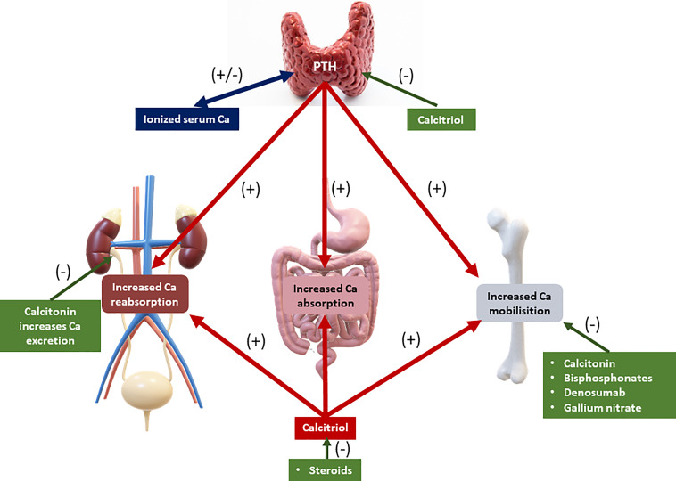
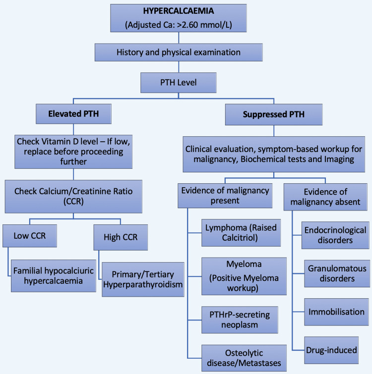

疾病 一般內科
Hypercalcemia ｜ 高血鈣 · 高鈣血症 筆記更新 2026-07-27· 整理狀態：可用
加入閱讀清單 其他名稱 5 Hypercalcemia · 高血鈣 · 高鈣血症 · 惡性腫瘤高血鈣 · Hypercalcemia of malignancy
一句話總覽
高血鈣的鑑別幾乎全部由一個檢驗值分成兩半——parathyroid hormone (PTH) 。PTH 高、或在高血鈣下「不該正常卻正常」＝ 沒被抑制 → 副甲狀腺來源 ；PTH 被壓到很低 → 惡性腫瘤或其他 。門診看到的多半是前者 （健檢發現、無症狀、鈣輕微升高），住院看到的多半是後者 （已知癌症、鈣升得快、症狀明顯）。先驗 PTH，鑑別診斷立刻砍掉一半。
30 秒行動卡
診斷關鍵 ：先確認是真的高——低白蛋白要校正、重症與腎衰竭者直接驗 ionized calcium 。接著驗 intact PTH ：這一步決定後面所有動作。PTH 低 → 驗 parathyroid hormone-related protein (PTHrP)、25-OH-D、1,25-(OH)₂D、serum protein electrophoresis (SPEP) ；PTH 高 → 驗 24 小時尿鈣 排除 familial hypocalciuric hypercalcemia (FHH)。
治療骨架 ：等張生理食鹽水積極補液 →（有症狀或重度）calcitonin 橋接 → bisphosphonate 或 denosumab 撐住 → 治本 （副甲狀腺切除／治療原發癌／停掉肇事藥物）。
絕對不可 ：容積還沒補足就給 loop diuretic；繼續給 thiazide、鈣片、維生素 D；把 FHH 當原發性副甲狀腺亢進送去開刀；用 digoxin 的病人放著高血鈣不管；只看總鈣不看白蛋白。
定義與定位
項目
重點
本質
骨吸收、腸道吸收、腎臟再吸收 三條路其中一條（或多條）失控，超過腎臟的排泄上限
血中三種形式 約 50% 游離態（ionized，唯一有生理活性）／40% 結合於白蛋白／10% 與 citrate、phosphate 等陰離子結合
白蛋白校正公式 校正鈣（mg/dL）＝ 測得總鈣 ＋ 0.8 ×（4.0 − albumin g/dL）
分類位置
電解質異常。分類的第一刀是 intact PTH ，不是病史也不是症狀
好發族群
門診 ：停經後女性（Primary hyperparathyroidism↗ ）／住院 ：已知惡性腫瘤者
校正公式不是萬用的——重症與腎衰竭者要直接驗 ionized calcium
公式假設「白蛋白與鈣的結合行為是穩定的」；在重症、大量輸液、酸鹼異常、嚴重低白蛋白（< 3.0 g/dL）、慢性腎病 身上這個假設會塌掉。方向要記住：低白蛋白時公式傾向高估 ionized calcium → 造成假性的「高血鈣」與漏掉的低血鈣。
所以只要臨床決策要靠這個數字（要不要給 bisphosphonate、要不要洗腎），就 直接驗 ionized calcium ——多數醫院的血氣分析儀會同時報，抽一管就有（Arterial blood gas ）。最新立場已建議檢驗室不要再常規報告「校正鈣」。
分級（校正鈣）
數值
處置急迫性
輕度 10.5–11.9 mg/dL 多半無症狀。不急著降鈣 ，重點是找病因、停掉肇事藥、衛教避免脫水
中度 12.0–13.9 mg/dL 看症狀 與上升速度 決定。有症狀就住院補液
重度／高血鈣危象 ≥ 14.0 mg/dL 住院、立刻靜脈補液 ＋ calcitonin ＋ bisphosphonate ，同時找病因
病因與機制
flowchart TD
A["鈣進入血液的速度<br/>超過腎臟排出"] --> B["骨吸收↑<br/>破骨細胞被活化"]
A --> C["腸道吸收↑<br/>1,25-(OH)₂D 過多"]
A --> D["腎排泄↓<br/>遠曲小管再吸收增加"]
B --> B1["PTH・PTHrP・溶骨轉移<br/>甲狀腺亢進・長期臥床"]
C --> C1["維生素 D 中毒<br/>肉芽腫疾病・淋巴瘤"]
D --> D1["thiazide・FHH<br/>脫水・milk-alkali"]
B1 --> E["血清鈣上升"]
C1 --> E
D1 --> E
E --> F["多尿 → 脫水 → GFR↓<br/>鈣更排不掉（惡性循環）"]
classDef key fill:#263238,stroke:#000,color:#fff,font-weight:bold
class F key
筆記中的流程與關係 最後那個惡性循環，就是「先補液」的全部理由
高血鈣會干擾腎小管對 antidiuretic hormone (ADH) 的反應 → 腎源性尿崩 → 多尿 → 脫水 → 腎絲球過濾率下降 → 鈣排得更少 → 鈣更高。所以幾乎每一個症狀性高血鈣的病人都是嚴重脫水的 ——這不是併發症，是機制本身的一部分，也是為什麼治療的第一步永遠是生理食鹽水，而不是任何一種降鈣藥。

PTH／calcitriol 鈣恆定軸：PTH 增加腎鈣再吸收、腸道吸收與骨鈣動員；calcitriol 也促進腸吸收與骨動員，而血鈣與 calcitriol 反過來抑制 PTH。圖下方標出 steroids 主要壓低 calcitriol-mediated calcium absorption／production 這一軸。延伸到惡性腫瘤時，PTHrP 與 PTH 共用 PTH1R ，因此主要模仿 PTH 在骨與腎的作用。Source: Çetin et al., Front Endocrinol 2023, Figure 1 （CC BY 4.0）；PTHrP–PTH1R connection: Datta & Abou-Samra, Front Biosci 2009 。
病因表：先分成 PTH 兩半
PTH 依賴型 （PTH 高，或在高血鈣下未被抑制）
病因
線索
Primary hyperparathyroidism↗ 門診高血鈣最常見的原因 。多為單一腺瘤；病程以年計、鈣輕度升高、常是健檢意外發現；磷偏低
Tertiary hyperparathyroidism
長期慢性腎病／Dialysis 病人的副甲狀腺變成自主分泌 ，即使腎移植後仍持續
Familial hypocalciuric hypercalcemia (FHH) 體染色體顯性、calcium-sensing receptor (CASR) 功能失能突變 ；年輕、無症狀、家族多人高血鈣、尿鈣低 。開刀無效
副甲狀腺癌
罕見。鈣常 > 14 mg/dL、PTH 極高、頸部可摸到腫塊
Lithium 相關副甲狀腺亢進 提高 CASR 設定點 → PTH 不被抑制。生化長相與 Primary hyperparathyroidism↗ 一模一樣（鈣高、PTH 不低、尿鈣偏低 ）。逾半數為多腺體疾病 ，定位影像常陰性；先問藥史再談開刀
PTH 非依賴型 （PTH 被抑制）
分類
病因
線索
惡性腫瘤 ① PTHrP 分泌型（humoral hypercalcemia of malignancy）——四型中最常見 鱗狀細胞癌（肺、頭頸、食道）、腎細胞癌、乳癌。PTH 低、PTHrP 高 ；骨掃描可能乾淨
惡性腫瘤 ② 溶骨性骨轉移 乳癌、Multiple Myeloma ；影像見溶骨病灶，常伴骨痛與病理性骨折
惡性腫瘤 ③ 1,25-(OH)₂D 分泌型——見於淋巴瘤 DLBCL 、Hodgkin Lymphoma 、Follicular Lymphoma 。腫瘤細胞自帶 1α-hydroxylase；對類固醇反應好
惡性腫瘤 ④ 異位 PTH 分泌
極罕見 。生化上像副甲狀腺亢進，但腺體正常
維生素 D 過多
維生素 D 中毒（保健食品過量）
25-OH-D 極高 ；病人常不覺得那是「藥」
維生素 D 過多
肉芽腫疾病 ：Sarcoidosis↗ 、Tuberculosis↗ 、黴菌感染巨噬細胞的 1α-hydroxylase 活性升高 → 1,25-(OH)₂D 高而 25-OH-D 不高 ；常伴 Fever 、體重減輕
藥物
Thiazide （減少遠曲小管排鈣，同時升尿酸 → Gout ）、維生素 A 過量、teriparatide停藥後 1–3 個月重驗
其他
Milk-alkali syndrome （大量鈣片＋制酸劑）高血鈣 ＋ 代謝性鹼中毒 ＋ 腎損傷 三聯——現在多見於長期吃鈣片的骨鬆病人
其他
甲狀腺亢進
甲狀腺素直接刺激骨吸收；多為輕度
其他
長期臥床／制動 骨吸收 > 骨形成；在本來骨轉換就快 的人（青少年、Paget、已有骨轉移）才明顯
其他
腎上腺不全
常同時有低血壓、低血鈉、對輸液反應差
臨床表現
口訣
系統
表現
Stones 腎
Nephrolithiasis↗ 腎結石、nephrocalcinosis 腎鈣化、腎源性尿崩、Acute kidney injury
Bones 骨
骨痛、骨質疏鬆、病理性骨折；重度副甲狀腺亢進可見 osteitis fibrosa cystica
Groans 腸胃
便秘（最常見）、噁心嘔吐、食慾差、Abdominal pain↗ 、消化性潰瘍、Acute pancreatitis
Thrones 泌尿
多尿、夜尿、口渴——結果是嚴重脫水 ，重度者可進展為低血容性 Shock
Psychiatric overtones 神經精神
倦怠、憂鬱、注意力差、肌肉無力、意識混亂 → 表現為 Delirium ；極重度可昏迷
典型 ：無症狀，健檢或例行生化意外發現（尤其原發性副甲狀腺亢進）提示性 ：已知癌症病人突然變得倦怠、便秘、意識混亂——先驗鈣，不要先歸因於癌症本身或止痛藥 少見但重要 ：以急性胰臟炎、反覆腎結石、或無法解釋的譫妄為第一個表現
反直覺：症狀嚴重度取決於「上升速度」，不是絕對值
同樣是 13 mg/dL：原發性副甲狀腺亢進 的病人可能爬了三年才到、身體已完全適應，照常上班、什麼症狀都沒有 ；惡性腫瘤高血鈣 的病人可能兩週內從 9.5 衝到 13，已經意識混亂、脫水、躺在急診 。
所以不能用數字決定要不要積極治療 ，判準是「有沒有症狀 ＋ 升得多快 」——一個 12.5 但兩天內冒上來又意識改變的病人，比一個穩定 13.5 的無症狀病人急得多。反過來也成立：慢性穩定的輕度高血鈣不需要在急診處理 ，該做的是查因與門診追蹤。
EKG ：最典型的是 QT interval 縮短 （主要是 ST 段被壓縮）。極重度時可見 PR 延長、QRS 增寬、心搏過緩，甚至心搏停止。用 digoxin 的病人特別危險 （見下方禁忌表）。
→ 相關主訴流程：Delirium 、Abdominal pain↗ （Workup）
診斷
診斷流程：確認 → 驗 PTH → 分兩半
① 確認真的高 ：重驗一次校正鈣（止血帶綁太久、脫水都會假性偏高）；重症、低白蛋白、腎衰竭 → 直接驗 ionized calcium 。② 驗 intact PTH ——這是唯一的分岔點，其他檢查都等它的結果。
③ PTH 高，或「數值在正常範圍但高血鈣時本來就該被壓低」 （＝未被抑制）→ 走副甲狀腺路線：24 小時尿鈣 ＋ calcium/creatinine clearance ratio (CCCR) 先排除 FHH，再做定位影像（頸部超音波、sestamibi scan）。
④ PTH 被抑制 （通常 < 20 pg/mL）→ 走惡性與維生素 D 路線：PTHrP、25-OH-D、1,25-(OH)₂D、SPEP ＋ 血清游離輕鏈 (serum free light chain)、影像 。
檢查
什麼時候開
怎麼讀
校正鈣／ionized calcium
一律
確認診斷；重症與腎衰竭以 ionized 為準
Intact PTH 一律，而且是第一個 高或未被抑制 → 副甲狀腺／lithium；被抑制 → 其他
PTHrP PTH 被抑制時
升高 → humoral hypercalcemia of malignancy
25-OH-D
PTH 被抑制時
極高 → 維生素 D 中毒
1,25-(OH)₂D PTH 被抑制時
升高而 25-OH-D 不高 → 淋巴瘤、Sarcoidosis↗ 、Tuberculosis↗
SPEP ＋ 血清游離輕鏈 ＋ 尿液免疫固定電泳 PTH 被抑制、又有貧血／腎損傷／骨痛
Multiple Myeloma ；尿蛋白判讀見 UPCR UACR
24 小時尿鈣 ＋ CCCR PTH 高或未被抑制時 （開刀前必做）CCCR < 0.01 支持 FHH
磷、ALP、Cr／eGFR、鎂
一律
低磷 支持 PTH／PTHrP 在作用；Cr 上升 ＝ Acute kidney injury
TSH、free T4、早晨 cortisol
前面都沒答案時
甲狀腺亢進、腎上腺不全
影像（CXR、CT、骨掃描、乳房／攝護腺篩檢）
疑似惡性
找原發灶與骨轉移
CCCR 怎麼算 ：（尿鈣 × 血清肌酸酐）÷（血清鈣 × 尿肌酸酐） ，尿與血同時採。

先確認 adjusted／ionized calcium，再以 intact PTH 作第一個分岔。PTH 高或在高血鈣下「不適當地正常」都走左側：尿鈣／CCCR 分 FHH 與 primary／tertiary hyperparathyroidism；PTH suppressed 才走右側：惡性腫瘤（PTHrP、myeloma／SPEP、骨轉移、lymphoma／1,25-(OH)₂D）與其他內分泌、肉芽腫、制動、藥物病因。圖中 CCR 的概念對應本文使用的 CCCR；臨床仍以本文列出的 <0.01 與 >0.02 解讀。Source: Nadarajah et al., Cureus 2024, Figure 2 （CC BY 4.0）。
FHH vs Primary hyperparathyroidism：這兩個一定要分開
Primary hyperparathyroidism FHH
機轉
副甲狀腺腺瘤自主分泌 PTH
CASR 功能失能突變 ，體染色體顯性——腺體是無辜的
血清 PTH
高或未被抑制
高或未被抑制（兩者長得一樣，靠 PTH 分不出來 ）
血鈣
輕–中度升高，多年會慢慢進展
輕度、終身穩定 ——翻舊資料常發現十年前就這個數字
24 小時尿鈣 正常或偏高
低 （腎小管把鈣抓回去）
CCCR 一般 > 0.02
< 0.01 支持 FHH
年齡與家族史
多為停經後女性
年輕即發病、家族多人有高血鈣
併發症
腎結石、骨質疏鬆
幾乎沒有 ——這是良性狀態
處置 符合條件者副甲狀腺切除可治癒
不開刀、不治療、只追蹤
CCCR 有灰區，不要只憑一個數字送病人進開刀房
0.01–0.02 是灰區，兩邊都有相當比例落在其中——CCCR 支持診斷，不能單獨定案。 真正的三根支柱是：① 家族史 ② 過去多年的鈣值是否一路穩定 ③ CCCR ；三者都指向 FHH 而仍猶豫時做 CASR 基因檢測 ，這比開一次無效的刀便宜太多。
另外：維生素 D 缺乏會把尿鈣壓低 ，讓真正的副甲狀腺亢進看起來像 FHH——驗尿鈣前先看 25-OH-D。
鑑別診斷
要排除的
支持它的線索
怎麼排除
Primary hyperparathyroidism↗ 無症狀、健檢發現、鈣輕度升高、病程數年、磷低
PTH 高／未被抑制 ＋ 尿鈣不低
惡性腫瘤高血鈣
鈣在數週內快速上升 、症狀明顯、體重減輕、已知癌症PTH 被抑制 ＋ PTHrP 或影像
FHH
年輕、家族史、終身輕度穩定高鈣、無併發症
24 小時尿鈣低、CCCR < 0.01
Multiple Myeloma 貧血（Anemia ）、腎損傷、骨痛、溶骨病灶、ESR 高
SPEP、血清游離輕鏈、骨髓檢查
Sarcoidosis↗ ／ Tuberculosis↗ 咳嗽、發燒、雙側肺門淋巴結、體重減輕
1,25-(OH)₂D 高 、影像、病理／抗酸染色
維生素 D 或鈣片過量
保健食品史、長期制酸劑
25-OH-D 高；milk-alkali 另有代謝性鹼中毒
Thiazide／lithium
用藥史
停藥後 1–3 個月重驗鈣與 PTH
Pseudohypercalcemia 假性高血鈣 高白蛋白（脫水）、骨髓瘤的 M protein 結合鈣、止血帶綁太久
ionized calcium 正常
治療
階梯
處置
起效時間
重點
① 補液（永遠的第一步） 等張生理食鹽水 0.9% NaCl 積極靜脈輸注 數小時
病人幾乎都嚴重脫水。恢復腎絲球過濾率＋抑制腎小管再吸收鈣。輸液速度依心腎功能與尿量調整
② Calcitonin 皮下或肌肉注射
數小時內（最快的一個） 48–72 小時後 tachyphylaxis （受體 downregulation）→ 只是橋接 ，撐到 bisphosphonate 起效為止，不要一直用下去
③ Bisphosphonate Zoledronic acid （首選）或 pamidronate 靜脈輸注24–72 小時起效、4–7 天達最大效果 抑制破骨細胞，效果可持續數週。腎功能不佳要減量／延長輸注時間 ；嚴重腎衰竭改用 denosumab
④ Denosumab
皮下注射（惡性腫瘤高血鈣用 120 mg）
數日
用於 bisphosphonate 無效或腎衰竭 者；劑量不需依腎功能調整，但 eGFR < 30 或透析病人有嚴重低血鈣的黑框警示、可致死 。給藥前先補足 25-OH-D 與鎂，給藥後 1–2 週密集追鈣；停藥後另有鈣反彈。現行指引已把它與 IV bisphosphonate 並列第一線
⑤ Glucocorticoid
Prednisolone 口服／靜脈（20–60 mg/day）
2–5 天
主要對 1,25-(OH)₂D 過多型有效 ：淋巴瘤、肉芽腫疾病、維生素 D／A 中毒。Multiple Myeloma 也有效對 PTH 型與實體腫瘤的 PTHrP 型無效
⑥ Loop diuretic
Furosemide
—
不是常規 。只用於補液後仍容積過載 、或心衰竭／腎衰竭撐不住輸液量的病人
⑦ Dialysis
低鈣或無鈣透析液
數小時
危及生命的高血鈣 ＋ 腎衰竭或心衰竭無法承受大量輸液 時的最後手段
治本 副甲狀腺切除；治療原發癌；停 thiazide／鈣片／維生素 D／lithium；無法開刀者用 cinacalcet
—
前面六項全是暫時的 。沒有治本，鈣一定會回來
劑量速記 ：0.9% NaCl 200–300 mL/h 起（依心腎功能調整，目標尿量 100–150 mL/h）｜Calcitonin 4 IU/kg SC/IM q12h （可增至 8 IU/kg q6–12h）｜Zoledronic acid 4 mg IV，輸注 ≥ 15 分鐘 ｜Pamidronate 60–90 mg IV，2–4 小時 ｜Denosumab 120 mg SC ｜Prednisone 20–60 mg/day
為什麼補液排第一、loop diuretic 不是
高血鈣的病人是脫水 的（腎源性尿崩 → 多尿）。容積還沒補足就給 furosemide，等於把唯一還在排鈣的路（尿量）建立在更缺的容積上——鈣不會降，脫水與 Acute kidney injury 會更糟。
「furosemide 促進排鈣」是真的，但它 不是降鈣的主力 。正確位置 ：補液到容積正常之後 ，若出現 Dyspnea 、Edema 等容積過載徵象（Heart failure 、慢性腎病者最常見），才加進來幫忙排水。
重度病人要三管齊下，不是排隊等
校正鈣 ≥ 14 mg/dL 或有明顯症狀時，補液、calcitonin、bisphosphonate 是同一時間開的 ：補液幾小時內起效但幅度有限、calcitonin 撐住前 48–72 小時 、bisphosphonate 恰好在 24–72 小時 接手、4–7 天 達最大效果並撐得久。三者的時間曲線是設計來嚴絲合縫銜接的。
併發症與預後
要盯的併發症 ：Acute kidney injury 、Nephrolithiasis↗ 與腎鈣化、骨質疏鬆與病理性骨折、Acute pancreatitis 、Delirium 、心律不整、嚴重脫水導致的低血容性 Shock 治療中要盯的 ：bisphosphonate 或 denosumab 之後的低血鈣 （維生素 D 缺乏、腎功能差、副甲狀腺切除後者風險最高）、denosumab 停藥後的鈣反彈、zoledronic acid 的腎毒性預後 ：惡性腫瘤高血鈣是預後不良指標 ——它出現通常代表腫瘤負荷大、疾病正在進展，中位存活期以月 計；把鈣降下來能改善症狀與意識，但不改變腫瘤本身的病程 （跟家屬談話前要先想清楚）。相對地，原發性副甲狀腺亢進與 FHH 的預後很好 ——前者手術可治癒、後者根本不需要治療。同樣是「高血鈣」，兩端天差地遠，所以先分兩半 不只是診斷程序，也是預後判斷。
禁忌與陷阱
絕對不可
情境
絕對不可
為什麼
該做什麼
高血鈣但容積尚未補足
先給 furosemide 等 loop diuretic
病人本來就嚴重脫水；利尿讓 GFR 更差、鈣排得更少
先用 0.9% NaCl 補到容積正常 ，之後才依需要加 loop
任何高血鈣病人
繼續給 thiazide、鈣片、維生素 D、含鈣輸液 （如大量 lactated Ringer's）
直接把鈣推更高，或擋住腎臟排鈣
全部停掉；輸液一律選 0.9% NaCl
高血鈣 ＋ PTH 未被抑制
沒驗 24 小時尿鈣就送去副甲狀腺切除
FHH 的問題在 CASR 受體設定點，不在腺體——切了鈣還是高 開刀前一定要有 24 小時尿鈣與 CCCR ＋ 家族史 ；必要時 CASR 基因檢測
正在用 digoxin 的病人（Heart failure 、Atrial fibrillation ）
放著高血鈣不處理，或快速把鈣拉高
高血鈣會增強 digoxin 毒性 （兩者都拉高細胞內鈣）→ 惡性心律不整積極降鈣、監測 digoxin 濃度與 EKG；補鈣時要慢、要監測
低白蛋白、重症、腎衰竭病人
只看總鈣 就下結論或決定治療
白蛋白低會低估鈣；校正公式在這些人身上不可靠
直接驗 ionized calcium
重度（≥ 14 mg/dL）或明顯症狀
只給 bisphosphonate 就結束
要 24–72 小時起效、4–7 天才達最大效果 ，這段空窗病人會繼續惡化補液 ＋ calcitonin 橋接 ，同時給 bisphosphonate
嚴重腎功能不全
照常規劑量與速度給 zoledronic acid
可能進一步惡化腎功能
減量／延長輸注，或改 denosumab ；危及生命時 Dialysis
意識改變的高血鈣病人
直接歸因「老年人本來就會譫妄」而不驗鈣
高血鈣是可逆 的譫妄病因，漏掉就一直治不好
驗校正鈣／ionized calcium；譫妄本身的評估與處置見 Delirium
常見錯誤
忘了先驗 PTH 就開始亂猜 ——一個檢驗值可以砍掉一半的鑑別診斷，卻常常最後才被想到。看到 PTH「在正常範圍」就排除副甲狀腺亢進 ——高血鈣時 PTH 本來就該被壓到很低，「正常」等於不正常 。找不到原因就停下來 ——鈣升得快、體重減輕、Anemia ，就回頭認真找惡性腫瘤。
相關連結